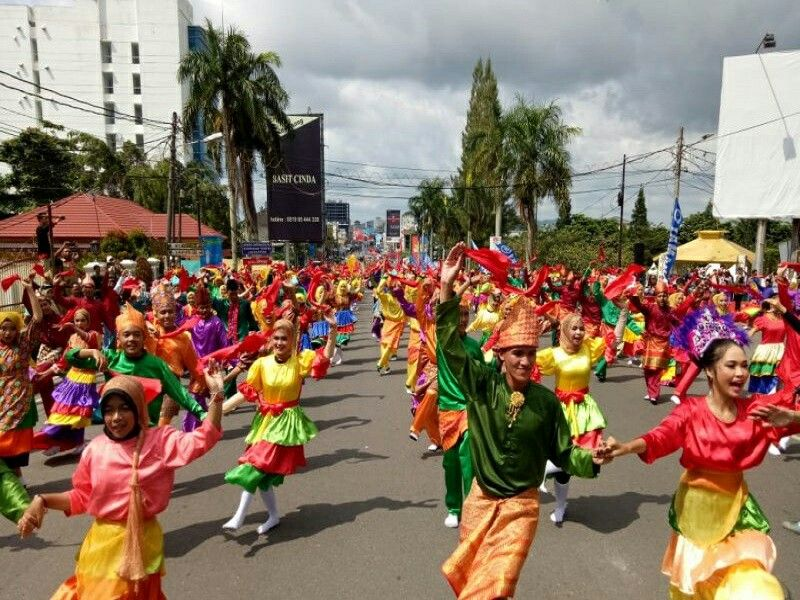
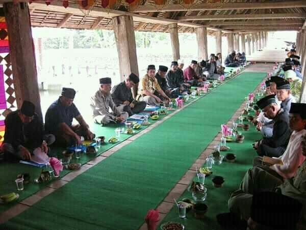
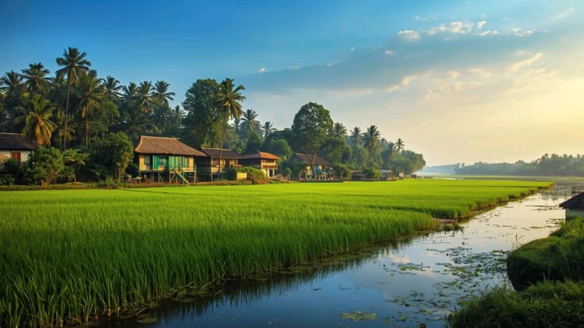
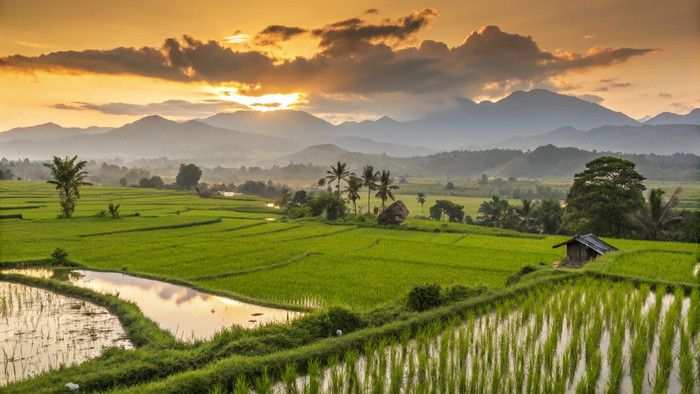

Gotongroyong Tiap Minggu

Pawai Budaya


Berdasarkan Peraturan Bupati Klaten Nomor 63 Tahun 2016 tentang Kedudukan Susunan Organisasi Tugas Fungsi Tata Kerja Kecamatan di Kabupaten Klaten, maka kedudukan Pemerintah Kecamatan Karanganom adalah salah satu unsur Perangkat Daerah Kabupaten Klaten yang memiliki lingkup tugas di wilayah Kecamatan Karanganom. Kantor Kecamatan Karanganom Kabupaten Klaten beralamat di Jl. Raya Penggung - Jatinom, Karanganom, Telp (0272) 337329 dibawah pimpinan Bapak Joko Handoyo S.STP, M.Si Kecamatan Karanganom terdiri dari 19 Desa / Kelurahan, yaitu: Jambeyan Jongkare Kadirejo Tarubasan Troso Blanceran Kunden Brangkal Beku Karangan Karanganom Padas Soropaten Jurangjero Ngabean Gledeg Gompol Pondok Jeblog Berbatasan dengan kecamatan 1. Kecamatan Polan disebelah Utara 2. Kecamatan Jatinom disebelah Barat 3. Kemcatan Ceper Sebelah timur 4. Kecamatan Ngawen disebelah selatan

Desa memiliki potensi besar dalam mengembangkan sektor Usaha Mikro, Kecil, dan Menengah (UMKM) melalui penyelenggaraan berbagai kegiatan dan event yang melibatkan masyarakat. Dengan memanfaatkan potensi lokal, seperti produk kerajinan, kuliner khas, hasil pertanian, serta kreativitas warga, desa dapat menjadi pusat pertumbuhan ekonomi yang berkelanjutan.
Berbagai event seperti bazar UMKM, car free day, festival kuliner, pameran produk lokal, pasar rakyat, dan kegiatan budaya dapat menjadi sarana promosi yang efektif bagi pelaku usaha. Melalui kegiatan tersebut, UMKM memperoleh kesempatan untuk memperluas pasar, meningkatkan penjualan, serta memperkenalkan produk unggulan desa kepada masyarakat yang lebih luas.
Selain mendorong pertumbuhan ekonomi, penyelenggaraan event juga dapat meningkatkan kunjungan masyarakat, memperkuat kerja sama antar pelaku usaha, serta menciptakan lapangan pekerjaan baru. Dengan dukungan pemerintah desa dan partisipasi aktif masyarakat, potensi ini dapat menjadi salah satu langkah strategis dalam mewujudkan desa yang mandiri, maju, dan sejahtera.

